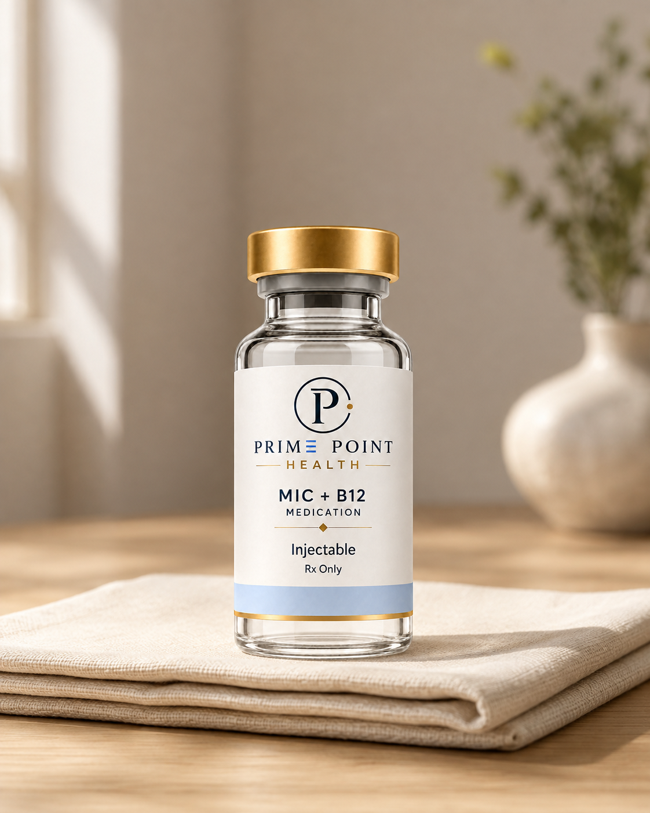

Energy Metabolism
Vitamin B12 helps your body convert food into usable energy and supports normal energy metabolism.

How MIC + B12 Works
MIC + B12 combines four nutrients that support everyday cell function.
Choline helps move fats. Methionine supports metabolism.
Inositol supports cell membranes and helps cells communicate.
Vitamin B12 helps form red blood cells and supports nerve function.
Product illustration. Actual packaging may vary.
$139/ month
Support fat metabolism, boost energy, and enhance your body's natural detox process
Prescription only when clinically appropriate. Eligibility and results vary.
MIC is an injectable supplement blend combining vitamin B12 with three lipotropic (fat-metabolizing) compounds: methionine, inositol, and choline. It helps boost energy levels, support metabolism, and assist with weight loss.
Methionine (M): An essential amino acid that helps the liver break down fats and prevents extra fat from building up in the body.
Inositol (I): A compound related to B-vitamins that helps control insulin and assists in moving fats through the bloodstream.
Choline (C): A nutrient that helps transport fat out of the liver so your body can use it as fuel.
Vitamin B12: A vitamin that helps form red blood cells, reduces fatigue, and boosts overall energy levels.
Methionine, inositol, choline, and vitamin B12 support metabolism and energy.
Vitamin B12 helps your body convert food into usable energy and supports normal energy metabolism.
Methionine, inositol, and choline play roles in how the body processes and transports fats.
Choline supports normal liver function and helps transport fats throughout the body.

Vitamin B12 helps maintain healthy nerve cells and supports normal neurological function.
Vitamin B12 plays an important role in producing healthy red blood cells that carry oxygen throughout the body.
Methionine, inositol, and choline contribute to important cellular processes, including cell signaling and normal cell structure.
No insurance required
Prescription only when clinically appropriate. Eligibility and results vary.
Be wary of cheap research peptides, or medication with low to no absorption such as supplements. We only offer real high-potency doctor-prescribed MIC+B12 Injections you can trust.
| What to compare | Prime Point HealthMIC+B12 InjectionsClinician-guided care | Over the counterOral SupplementsFormulations vary by product |
|---|---|---|
| Legally prescribed for human use | Yes - Rx from licensed provider | Yes - Over the counter |
| Purity & transparency | Clinical-grade, US pharmacy sourced | Variable quality & under-dosed |
| Absorption rate | ~100% bioavailability (injection) | Low - ~10–15% absorbed |
| Medical oversight | Includes consult & dosage guidance | None |
| Results timeline | Feel energy & clarity much quicker | Slow or negligible |
| Safety & compliance | HIPAA-compliant & pharmacy-verified | Often lacks 3rd-party testing |

Our U.S.-based 503A pharmacy partners compound active ingredients into medications for individual patients. These pharmacies are state-licensed and subject to FDA oversight.

We have personally vetted all pharmacy partners' compounding practices including how they test for potency, sterility, and endotoxins. We have thoughtfully chosen the highest quality pharmacies to provide medication to our patients.
When your clinician prescribes a compounded medication for you, our pharmacy partner prepares it to order in the formulation and strength specified on your prescription.
Methionine (M): An essential amino acid that helps the liver break down fats and prevents extra fat from building up in the body.
Inositol (I): A compound related to B-vitamins that helps control insulin and assists in moving fats through the bloodstream.
Choline (C): A nutrient that helps transport fat out of the liver so your body can use it as fuel.
Vitamin B12: A vitamin that helps form red blood cells, reduces fatigue, and boosts overall energy levels.
Yes. Every Prime Point Health treatment plan is reviewed and guided by licensed, board-certified clinicians. You'll have access to expert care, ongoing monitoring, and the support you need to track your progress.
MIC+B12 is an injectable blend. Follow the dose, route, and administration instructions provided by your licensed clinician and dispensing pharmacy.
Yes. All medications are sourced through FDA-registered, U.S.-based compounding pharmacies that follow applicable regulatory and safety requirements. FDA registration does not mean compounded medications are FDA-approved.
Vitamin B12 helps your body convert food into usable energy and supports normal energy metabolism. Methionine, inositol, and choline play roles in how the body processes and transports fats.
No. Insurance is not required for MIC+B12. Prime Point Health accepts credit cards and offers pay-over-time plans for added flexibility.